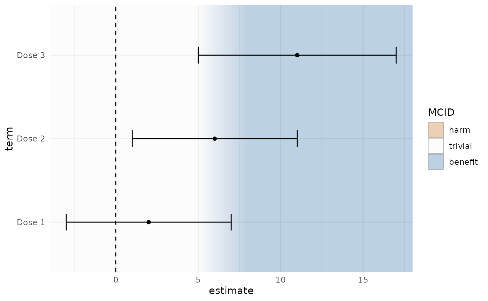
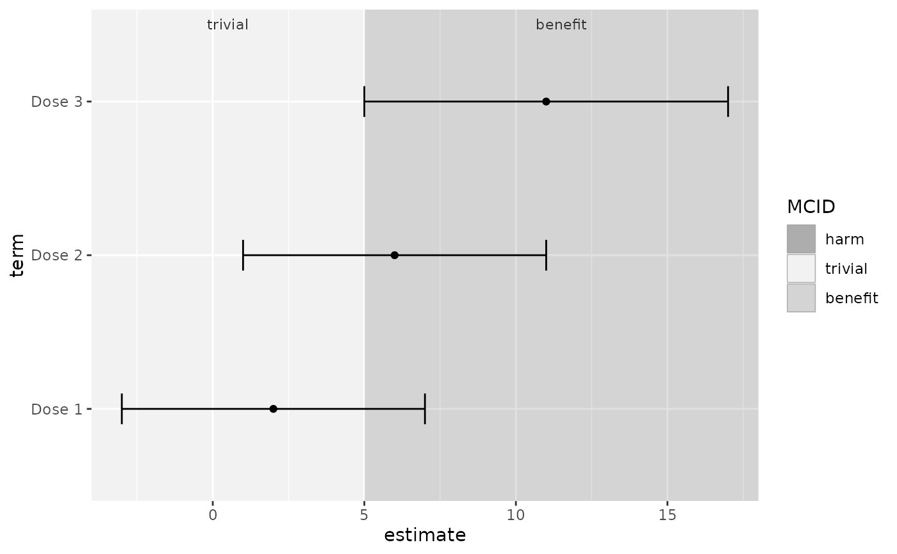

Draws "harm", "trivial" and "benefit" background zones defined by a minimal clinically important difference (MCID) behind estimates and confidence intervals. The thresholds may be asymmetric and uncertain (given as ranges). The layer draws a reference background only: it does not classify estimates or compute the probability that an effect is beneficial.
Usage
geom_mcid_zones(
mcid,
sd = NULL,
null = 0,
softness = NULL,
beyond = c("flat", "multiples"),
palette = "diverging",
alpha = 0.35,
orientation = "x",
expand = FALSE,
labels = FALSE,
label_size = 3,
label_colour = "grey20",
n_slices = 40,
title = NULL,
show.legend = NA,
...
)Arguments
- mcid
An
mcid_thresholds()object, or a bare positive number (symmetric shorthand formcid_thresholds(mcid = x), with higher values better).- sd
If given, thresholds are divided by
sd, for an axis that shows standardised differences.- null
Position of the null on the axis.
- softness
NULL(hard edges unless the MCID is a range) or a fraction of each point threshold over which to fade.- beyond
"flat"(default): one colour beyond the MCID."multiples": deepening colour at 2x and 3x the MCID.- palette
"diverging"(default),"grey", or three colours.- alpha
Opacity of the fills.
- orientation
The axis that shows the effect:
"x"(default, as in forest plots) or"y".- expand
If
TRUE, all zone boundaries train the position scale.- labels
If
TRUE, zone names are printed inside the panel, near the top (effect on the horizontal axis) or the right edge (vertical axis).- label_size, label_colour
Size (mm) and colour of zone labels.
- n_slices
Number of thin rectangles used to draw each soft transition.
- title
Legend title. Defaults to the short source of the thresholds.
- show.legend
Should the zone legend be shown?
- ...
Other arguments passed to
ggplot2::layer().
Details
Add the layer before points, error bars and reference lines so that they are drawn on top of the zones.
Where the MCID comes from
An MCID should come from patients' judgements (anchor-based methods;
Jaeschke, Singer & Guyatt 1989). Distribution-based values, created only
through an explicit call to mcid_distribution(), are marked
provisional and the legend says so. There is no automatic MCID.
The MCID is usually defined for change within a patient, whereas
contrasts between groups are differences in mean outcome. Reading group
differences against an MCID is common but contested; see
vignette("effectzones").
Boundaries
With softness = NULL (default) boundaries are hard edges, except where
the MCID was given as a range: the background then fades from one zone to
the next across that range, showing where the threshold is uncertain. A
number gives soft transitions spanning that fraction of each point
threshold.
With beyond = "multiples" the colour keeps deepening at 2 and 3 times
the MCID (capped at 3), so that an estimate at 1.2 x MCID and one at 4 x
MCID sit on visibly different backgrounds. Multiples are of the midpoint
when the MCID is a range.
Palettes
The default "diverging" palette uses muted blue (benefit) and orange
(harm), which remain distinguishable under the common colour-vision
deficiencies, around a neutral centre. The "grey" palette uses white
for trivial and two clearly different greys for benefit and harm. Grey
levels carry no natural direction, so use labels = TRUE with it (or
make sure the legend is printed) so readers can tell which side is
which. A custom palette is three colours named harm, trivial,
benefit.
References
Jaeschke R, Singer J, Guyatt GH (1989). Measurement of health status: ascertaining the minimal clinically important difference. Controlled Clinical Trials 10(4):407-415. doi:10.1016/0197-2456(89)90005-6
McGlothlin AE, Lewis RJ (2014). Minimal clinically important difference: defining what really matters to patients. JAMA 312(13):1342-1343.
Examples
library(ggplot2)
df <- data.frame(term = c("Dose 1", "Dose 2", "Dose 3"),
estimate = c(2, 6, 11), lower = c(-3, 1, 5),
upper = c(7, 11, 17))
ggplot(df, aes(estimate, term)) +
geom_mcid_zones(mcid_thresholds(lower = -4, upper = c(5, 8))) +
geom_vline(xintercept = 0, linetype = 2) +
geom_errorbar(aes(xmin = lower, xmax = upper), width = 0.2) +
geom_point() +
theme_minimal()

# Grey palette: label the zones
ggplot(df, aes(estimate, term)) +
geom_mcid_zones(5, palette = "grey", labels = TRUE) +
geom_errorbar(aes(xmin = lower, xmax = upper), width = 0.2) +
geom_point()
